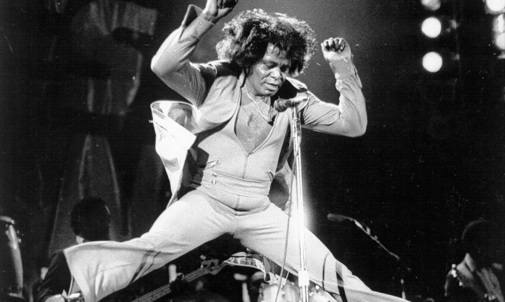

MUS 302 · What to Listen for in Music
Module 2: African American Foundational Traditions · Listening Guide · Track 3 of 5
Track 3 James Brown, "Say It Loud — I'm Black and I'm Proud" (1968)

Context
Brown before the song: Augusta, the Famous Flames, and the rise of soul
James Brown was born in Barnwell, South Carolina, in 1933, and raised in deep poverty in , where his aunt ran a brothel and Brown shined shoes, picked cotton, and danced for tips on the street. He was arrested at sixteen for armed robbery and spent three years in juvenile detention. After his release in 1952 he joined a quartet called the Avons, then the Famous Flames, and in 1956 the Flames recorded "Please, Please, Please" for King Records. The single was a regional R&B hit. By the early 1960s, with the released-as-an-LP Live at the Apollo (1963), Brown had become one of the most successful Black recording artists in the United States, building his career on the foundation that Sister Rosetta Tharpe and her gospel-quartet contemporaries had laid: ecstatic vocal performance, hard-driving , theatrical staging, the of a sanctified service translated into the secular space of the concert stage. The ' Ira Tucker, who ran up the aisles and dropped to his knees during gospel performances in the 1940s, was one of the people Brown had watched and learned from. By 1968 Brown was no longer just a singer. He was a national figure with a touring band, a publishing company, several radio stations (he had bought WRDW in Augusta, the same station where he had once shined shoes for the announcers), and an audience that crossed racial lines in a way few Black artists had managed.
The musical journey from "Please, Please, Please" in 1956 to "Say It Loud" in 1968 is also the journey from to to , and Brown drove much of it. Around 1965, with "Papa's Got a Brand New Bag" and "I Got You (I Feel Good)," Brown began stripping his arrangements down to a rhythmic skeleton: the song's harmonic content shrunk to one or two chords, the bass and drums locked into a single repeated pattern, the horns punctuating from above with short stabs, the singer riding on top with shouts and grunts and squeals. Critics now call this the invention of funk. In the methodology reading we said that on top of the rhythmic grid you can hold up four lenses: timbre, texture, form, gesture. Brown's funk innovation was to make rhythm so central that it pushed harmony and melody into the background and made the rhythmic substrate itself the content of the song. By 1968, when he walked into a Los Angeles studio to record "Say It Loud," he had been doing this for three years. What was new was the politics.
The political moment: King, Boston, and the song on a napkin
On April 4, 1968, Martin Luther King Jr. was assassinated in Memphis. Cities across the United States erupted: Washington D.C., Baltimore, Chicago, Kansas City, Detroit, dozens of others, in the largest wave of urban uprisings in American history. James Brown was scheduled to play the following night, April 5. The mayor of Boston, Kevin White, considered cancelling the show, fearing that a large gathering of grieving Black Bostonians would turn into a riot. Brown and his manager negotiated instead: the concert would go ahead, and the local public-television station WGBH would broadcast it live, free, to the entire city, so that anyone who might have come to Boston Garden would have a reason to stay home and watch instead. The broadcast worked. Boston was one of the few major American cities that did not burn that week. Brown spent the concert calming the crowd between songs, telling Black Bostonians that the way to honor King was not to destroy their own neighborhoods but to "represent" their community to themselves and to the world.
Four months later, in early August 1968, James Brown was in Los Angeles. According to his close friend, the activist , who heard the story from Brown himself, Brown had spent the previous evening watching Black Angelenos argue with one another, and he went back to his hotel room thinking, "we have lost our pride." He wrote the lyrics of a new song on a napkin. The chorus would be the simplest call-and-response possible: he would shout "Say it loud!" and a chorus of voices would answer "I'm Black and I'm proud!" The verses would say the rest of what he wanted to say. "We demand a chance to do things for ourself," and "we're tired of beating our head against the wall and workin' for someone else." The song would be a direct address to Black Americans, not the Black Power slogans of or the , but a more accessible version of the same argument: pride, self-determination, an end to deference. He took the napkin into the studio.
The recording: Vox Studios, Van Nuys, August 7, 1968
The session took place on August 7, 1968, at Vox Studios in Van Nuys, California, an LA suburb. Brown had brought his touring band with him: on drums, Jimmy Nolen on guitar, Maceo Parker on saxophone, and on saxophone as bandleader, arranger, and (for this session) co-writer. The session was also 's first recording with Brown; Wesley played trombone and would become one of the central figures in Brown's bands and in the J.B.'s for the next decade. Brown ran the session the way he ran his shows. The musicians set up facing one another so they could watch his hand cues. The take was performed live in the room, with answers and locks captured in the moment rather than overdubbed.
The choir was the part of the session that students sometimes have a hard time believing. There was no professional vocal group on the recording. Instead, Brown's longtime manager drove an old school bus into Watts and Compton, the Black neighborhoods of South Central Los Angeles that had been the site of the 1965 Watts uprising, and rounded up about thirty children. Bobbitt told the story years later at Brown's funeral. "I got an old school bus and we rode around Watts and got 30 children, brought them down to the studio, recorded 'Say It Loud.' I gave them ten dollars each and a James Brown album. That's how the song that you love so well was played." The voices answering "I'm Black and I'm proud!" on the recording belong to those children. Brown later said, in interviews, that he wanted children specifically because the song would "sound like a children's song" so that "children who heard it could grow up feeling pride."
Reception, the cost, and the hip hop afterlife
Released as a two-part single in late August 1968, "Say It Loud — I'm Black and I'm Proud (Part 1)" entered the Billboard Hot 100 on September 7 at number 60, climbed to number 39 the following week, and peaked at number 10. On the R&B chart it went to number one and stayed there for six weeks, Brown's seventh number-one R&B record. The song became, almost immediately, an anthem of the movement: chanted at rallies, played from car windows, sung by elementary-school children in cities Brown had never visited. Public Enemy's Chuck D, who would go on to write some of the most politically-incendiary songs in , has said: "'Say It Loud — I'm Black and I'm Proud' was a record that really convinced me to say I was Black instead of a negro. Back then Black folks were called negroes, but James said you can say it loud: that being Black is a great thing instead of something you have to apologize for."
The reception was not uncomplicated. Brown himself said, later: "the song cost me a lot of my crossover audience. The racial makeup at my concerts was mostly Black after that. I don't regret it, though, even if it was misunderstood." Some Black listeners, on the other hand, found the song too moderate, an individualist call to pride rather than a structural critique of American racism. Brown's politics over the next several years did not help his standing with that audience. He had endorsed the Democrat for president in 1968 and worked to mobilize Black voters for him; when Humphrey lost to Richard Nixon, Brown switched allegiances, performed "Say It Loud" along with two other songs at Nixon's January 1969 inauguration, and supported Nixon's 1972 re-election campaign. The contradiction is real and worth holding onto. The same artist who wrote the most galvanizing pro-Black song of the year also performed it for the inauguration of a president who would build his career on coded racial politics and the war on drugs. Brown's biographer R.J. Smith has argued that Brown's political vision was less ideological than entrepreneurial: pride and Black ownership over systemic critique, individual achievement over collective structural change. The song does some of that work. The man who wrote it did more.
The afterlife of the recording in hip hop is as important as the chart performance. The opening drum break, the , the children's chorus, the "with your bad self" exhortation: all of these became raw material for beginning in the mid-1980s. Eric B and Rakim sampled the track on "Move the Crowd" (1987). Big Daddy Kane, LL Cool J, and 2 Live Crew followed. The percussive, stripped-down, drums-and-vocals-forward shape that Brown was working out in 1968 turned out to be the shape that hip hop would build itself around fifteen years later. The pedagogical point is one we will return to in Track 4, when we move from Brown to : a great deal of what hip hop sounds like, structurally, is what James Brown sounded like already.
Things to listen for
The recording is in 4/4 at a of about 115 , faster than the Cooke or Bessie Smith tracks but considerably slower than the Tharpe at 155. The harmonic vocabulary is the simplest in this listening guide so far. The song spends most of its three minutes on a single chord (a dominant-flavored E-flat chord, in the studio recording you are listening to), with brief horn-and-vocal answers that gesture toward other harmonies but never settle into a chord progression. There are no verses-and-choruses in the conventional sense. There is a groove, and on top of that groove there are lyrics, horn stabs, and the call-and-response with the children. The runtime is 3 minutes 2 seconds.
First, the timbre of Brown's voice. Compare it to the four voices in Module 1 and to the Module 2 voices we have heard so far. Cooke was creamy, with a small tear of vulnerability built into it. Cruz was bright and declarative, projecting forward like a brass instrument. DeSanto was sharp and conversational, with the shout always available. Bessie Smith was a heavy that sat down inside each note. Tharpe was a Sanctified soprano with bluesy edges. Brown is none of these. His voice is harsh, throaty, gravelly at the bottom and screaming at the top, a textured rasp that sounds nothing like a conventionally trained singer. The harshness is the point. He is not crooning at you, he is preaching at you, and the texture of his voice carries the urgency of the message. Notice how often he is not singing in any conventional sense at all. He is grunting, shouting, exhorting, half-talking. The full range of what a voice can do, on this recording, is treated as part of the singer's expressive vocabulary.
Second, the texture. Listen for the small number of distinct elements stacked on top of each other and how cleanly each one is doing its own thing. The drums (Clyde Stubblefield, who would also play "Cold Sweat" and "Funky Drummer" and become the most-sampled drummer in popular music) lay down a tight, syncopated pattern that emphasizes . The bass plays a short repeating figure that locks into the kick drum. The guitar (Jimmy Nolen) plays a chicken-scratch , percussive rather than harmonic, treating the guitar almost like another drum. The horn section punches in for one- and two-beat answers, then drops out. The children's chorus answers Brown across the call-and-response. Brown himself rides on top, sometimes singing, sometimes talking, sometimes hitting an exclamation and grunting "good God." The texture is dense in some senses (six or seven distinct elements going at once) and lean in others (almost no element is sustained, almost everything is a short rhythmic figure). This is the funk texture, and it is the direct ancestor of the texture of most hip hop, electronic dance music, and contemporary R&B.
Third, the form, or what stands in for form when there is no chord progression to organize the song. "Say It Loud" does not have verses-and-choruses in the way "Strange Things Happening Every Day" does. Instead it has a single repeating , a short rhythmic pattern that the band loops for the entire three minutes, with Brown's vocals organized into call-and-response cycles on top. The cycles run roughly: Brown shouts "Say it loud!", the children answer "I'm Black and I'm proud!", repeat several times, then Brown launches into a verse-like spoken passage, then the band hits a small horn break, then back to the call-and-response. The song's energy comes not from harmonic motion (there isn't any) but from variation: how Brown phrases the next line, where he places the grunts, when the horns come in, when the children answer with extra force. This single-vamp form is one of the things hip hop took directly from Brown. A hip hop track typically loops a short instrumental break for its full duration and lets the rapper build all the variation on top, exactly as Brown does here with his own voice.
Fourth, the politics, in two registers at once. The lyrics are doing direct political work: "we demand a chance to do things for ourself," "we're tired of beating our head against the wall and workin' for someone else." The framing reading argued that political work in this tradition runs through both content and form. "Say It Loud" is a clean example. The form itself is doing political work alongside the lyrics. The recording is built around a Black community choir, with thirty Black children from Watts and Compton given thirty equal voices in the chorus. The leader-and-community structure of a Sanctified church service has been moved, intact, into a Los Angeles recording studio, and what the community is being asked to affirm together is "I'm Black and I'm proud." The musical form, in other words, is enacting in real time the thing the lyrics are calling for: a Black collective speaking together in its own voice. Pick a moment in the recording where you feel that enactment most strongly (the first time the children answer, a moment when Brown lets them carry the line alone, the way the horn stab punctuates a particular shout) and try to articulate why that moment lands. The cost Brown spoke about, the audience he lost, came out of exactly this. White listeners who had been comfortable with Brown the soul star found that they were no longer the addressee of his music, and many of them left. The address was deliberate. The song was for the children on the school bus.
Reflective question
The framing reading argued that political work in American popular music can run through content (what a song says) and through form (how a song is built). "Say It Loud" does both, openly. Pick one specific moment in the recording, ideally a moment in the call-and-response between Brown and the children's chorus, and make an argument for what that moment is doing politically. Is the politics in the lyrics, in the sound of thirty children's voices saying the words together, in the way the music refuses to sound like a conventional pop song, or in some combination? And: how do you hold the political force of the recording alongside the fact that Brown performed it five months later at Richard Nixon's inauguration? Does the contradiction undercut the song, or is the song doing work that survives the contradictions of the man who wrote it?
Sources for this section
Brown, James, and Bruce Tucker. James Brown: The Godfather of Soul. Macmillan, 1986. Brown's autobiography, the source of his own framing of the Boston Garden concert, the writing of "Say It Loud," and the loss of his crossover audience.
Smith, R.J. The One: The Life and Music of James Brown. Gotham Books, 2012. The major modern biography of Brown, drawing on extensive interviews with band members and associates. The source for the band's working conditions, the studio setup at Vox in 1968, and the political contradictions of Brown's career.
Sullivan, James. The Hardest Working Man: How James Brown Saved the Soul of America. Gotham Books, 2008. A book-length account of the Boston Garden concert on April 5, 1968, and its broader political stakes.
Vincent, Rickey. Funk: The Music, the People, and the Rhythm of the One. St. Martin's Press, 1996. The standard popular history of funk as a genre and as a Black political-musical project; treats Brown as the central figure.
Werner, Craig. A Change Is Gonna Come: Music, Race, and the Soul of America. Plume, 1998. A wider history of African American popular music in the second half of the twentieth century, with substantial treatment of Brown's role in the soul-to-funk transition and of "Say It Loud" specifically.
Charles Bobbitt's account of recruiting the children's chorus is from his eulogy at James Brown's funeral, December 30, 2006, widely reported and excerpted; the version quoted here is from Paul Sexton, "'Say It Loud, I'm Black and I'm Proud': James Brown's Anthem of Empowerment," uDiscoverMusic, September 7, 2024.
Wikipedia. "Say It Loud – I'm Black and I'm Proud"; "James Brown"; "Clyde Stubblefield"; "Fred Wesley." Useful for cross-checking session dates, personnel, chart positions, and the song's hip-hop sampling lineage.